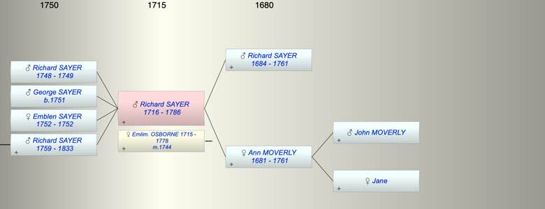

| [Index] |
| Richard SAYER (1716 - 1786) |
|  |
| b. abt 1716 at St Laurence |
| m. 24 Feb 1744 Emlim. Emblem OSBORNE (1715 - 1778) at St Laurence |
| d. 06 Dec 1786 at St Laurence aged 70 |
| Parents: |
| Richard SAYER (1684 - 1761) |
| Ann MOVERLY (1681 - 1761) |
| Children (4): |
| Richard SAYER (1748 - 1749) |
| George Osborn SAYER (1751 - ) |
| Emblen SAYER (1752 - 1752) |
| Richard SAYER (1759 - 1833) |
| Grandchildren (1): |
| Frances Mary SAYER (1792 - ) |
| Events in Richard SAYER (1716 - 1786)'s life | |||||
| Date | Age | Event | Place | Notes | Src |
| abt 1716 | Richard SAYER was born | St Laurence | Note 1 | ||
| 24 Feb 1744 | 28 | Married Emlim. Emblem OSBORNE (aged 29) | St Laurence | recorded as Emblem ex FMP PR | |
| 1748 | 32 | Birth of son Richard SAYER | St Laurence | Note 2 | |
| 1749 | 33 | Death of son Richard SAYER (aged 1) | St Laurence | Note 3 | |
| 1751 | 35 | Birth of son George Osborn SAYER | St Laurence | Note 4 | |
| 1752 | 36 | Birth of daughter Emblen SAYER | St Laurence | Note 5 | |
| 1752 | 36 | Death of daughter Emblen SAYER | St Laurence | ||
| 1759 | 43 | Birth of son Richard SAYER | St Laurence | Note 6 | |
| 1761 | 45 | Death of father Richard SAYER (aged 77) | St Laurence | Note 7 | |
| 1761 | 45 | Death of mother Ann MOVERLY (aged 80) | St Laurence | Note 8 | |
| 27 Feb 1778 | 62 | Death of wife Emlim. Emblem OSBORNE (aged 63) | St Laurence | Note 9 | |
| 06 Dec 1786 | 70 | Richard SAYER died | St Laurence | Note 10 | |
| Personal Notes: |
|
see Kent History and Library Centre: Title Deeds Ramsgate: messuage and 54 acres at Southwood (several deeds are endorsed 'Southwood Farm')Also, a messuage converted into two in St Lawrence, a messuage and herring house in Thanet St John, and land and marsh (33 acres) in Lydd and Midley. Includes: copy will of Henry Curling, 1699; copy probate of Thomas Curling, 1708; copy will of Ann Curling, 1767; copy will of Richard Sayer, 1786; marriage settlement of Richard Sayer and Mary Stead, 1787; marriage settlement of George Withersden and Frances Mary Sayer, 1820; and the probate of Richard Sayer, 1820.
This refers to the marriage settlement of Richard Sayer and Mary Stead 1787 but the PR shows the bride as Sarah Stead. |
| Created on a Mac™ using iFamily for Mac™ on 8 Oct 2023 |